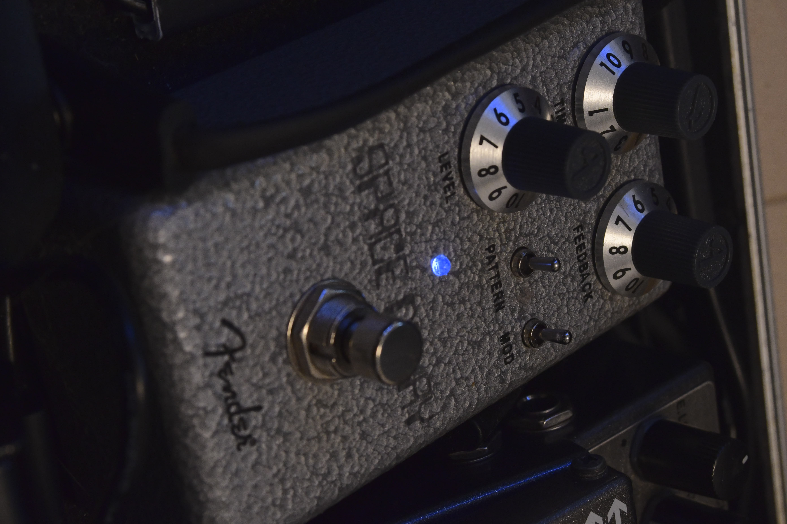

飯塚が使っていいお金を全部かき集めて集めたエフェクターたちを紹介していきます
ジョニーグリーンウッドという英国のギタリストの使っているものに影響を受けているBoss SD-1 Super overdrive
あの(要出典)ジョニー・グリーンウッドも使っているSD-1 ブースター代わりに使ってますが単体でもかっこいい音が出る SD-1wの購入も検討中 BD-2は"浅い"
Marshall Shred master
こちらもジョニーグリーンウッドが使ってた、もはや彼の代名詞 ディストーションですが、 RAT2と違ってGainをちゃんと上げないとまともな音が鳴りません 無駄にでかいのも最高すぎるって ケヴィンシールズ(MY bloddy Valentine)やアレックスジェームズ(blur)も使ってます ベースにも使える 神エフェクター
zoom MS-60B
Boss RV-6 Reverb
fender spece delay

ジョニーはRE-2やRE-20といったSpece echoを愛用していて、Radioheadのサウンドにも
超貢献してますね でも高くて買えない(ここで号泣)でもなんとこれは8000円
つまみはギターやアンプで使われてるのと同じかわいい奴、ModをONにすれば
テープエコーの揺らぎも再現できる 本当にいい
zoom g1 four
Korg kaoss pad KP3
Boss ODB-3 Bass overdrive
おまけ パワーサプライ